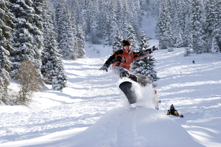

Module 7—Principles of Chemical Equilibrium
Lesson 6—Le Châtelier’s Principle
 Get
Focused
Get
Focused

© Danila/shutterstock
It’s winter and time to get back into the competitive season. The first few races of the snowboarding season are always so tough. Despite training hard in the off-season, snowboarders always feel out of breath and tired when in the mountains.
This kind of experience is common for people who visit altitudes, especially if they exert themselves through strenuous physical activity. You may have noticed that people who live at high altitudes do not seem to suffer from these symptoms. The human body’s ability to adapt to living at altitude has attracted many athletes to live and train in high-altitude locations or to purchase tents that simulate high-altitude conditions.
Since the quantity of oxygen in the air at higher altitudes is reduced as compared to lower altitudes, the human body has to respond to this situation. If you live under these conditions for a prolonged period of time, your body will produce more red blood cells, the blood component responsible for oxygen transport. By producing more red blood cells, your body can capture more of the oxygen from the air, thereby providing your body with sufficient oxygen.
In Lesson 6 you will learn about responses that occur in chemical systems as a result of changes in the conditions they are within. The change to conditions, often referred to as a stress, can change an equilibrium. In this lesson you will investigate whether there is a way to predict the response to a stress placed on a chemical system in an equilibrium.
Consider the following question as you complete Lesson 6:
- What is Le Châtelier’s principle and how is it used to predict changes in chemical equilibrium systems?
 Module
7: Lesson 6 Assignment
Module
7: Lesson 6 Assignment
The
assignment for this lesson is to hand in the completed table that you
created in Lesson one and continued to add to in lessons 2-6.
You must decide what to do with the questions that are not marked by the teacher.
Remember that these questions provide you with the practice and feedback that you need to successfully complete this course. You should respond to all the questions and place those answers in your course folder.